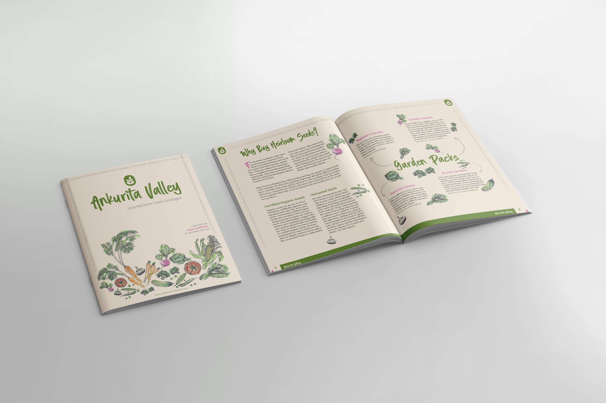
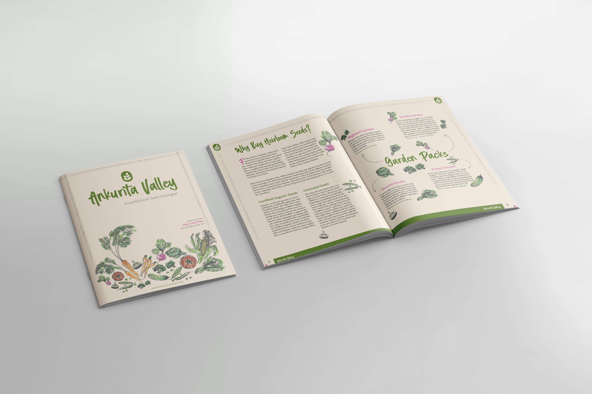

Ankurita is an imaginative heirloom seed brand. I designed the logo and hand-drew all illustrations using Adobe Illustrator. The catalogue layout was created in InDesign, blending organic visuals with a clean design to reflect the brand’s earthy, nostalgic identity.
 
